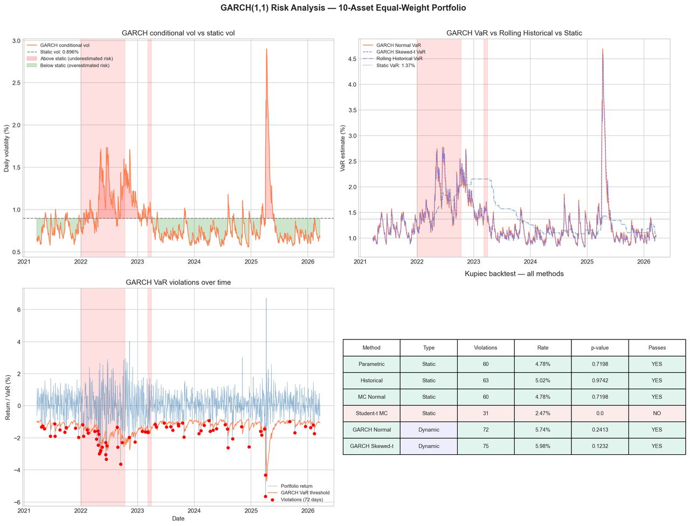
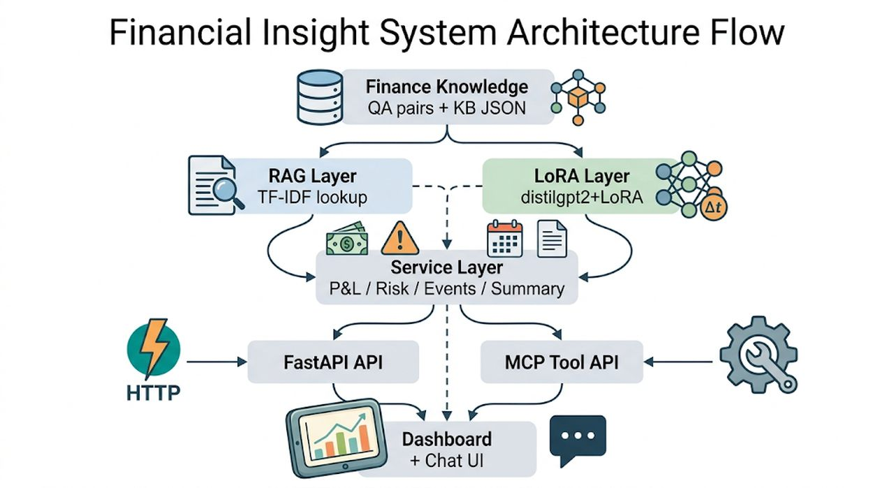
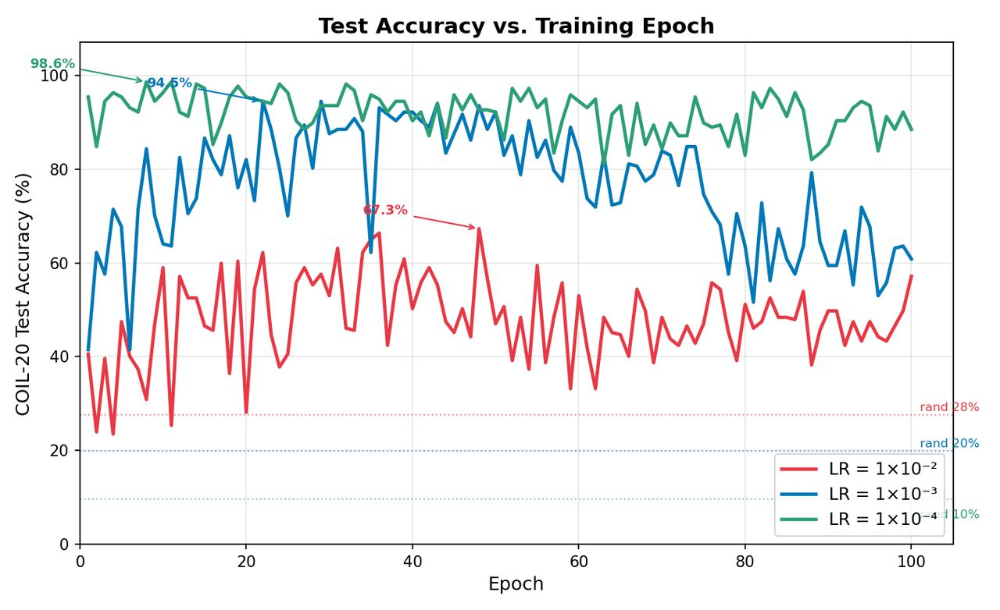

Data Scientist & Engineer · Bloomington, IN · Updated
1. Summary
Six years making data reliable enough to build on.
I build reliable data platforms and production GenAI systems. Most recently an AI Intern at McAfee, where I shipped an agentic incident-triage pipeline on AWS Bedrock. Currently pursuing my Masters in Data Science at Indiana University, after six years of enterprise data engineering at IBM and TCS.
I'm a data scientist and engineer working at the intersection of production systems and applied AI.
My six years at IBM and TCS were spent inside large retail banking and telecommunications environments, where the cost of a broken pipeline is measured in missed SLAs and downstream analytics failures. I learned to design data quality frameworks, operate batch systems on Hadoop and Spark, and run large migrations across hundreds of workflows. That work taught me something specific: the hardest part of machine learning in industry isn't the model, it's the data plumbing around it.
This past summer I was an AI Intern at McAfee, building a GenAI agent pipeline that routes Grafana alerts through AWS Lambda into Bedrock AgentCore for first-pass incident triage, with MCP servers exposing internal tooling to the agents and OPA policy checks keeping automation inside approved guardrails. I also built a SHAP-based explainability module for an LLM scam-detection classifier.
At Indiana University's Luddy School I focus on applied machine learning and LLM systems. My research benchmarks RAG, CAG, and CRAG for biomedical question answering with Professor Vardhan, and I'm currently building a modular RAG pipeline for accounting document extraction with Professor Golshan, both on the BigRed200 HPC cluster.
Focus areas
GenAI agents and LLM applications (RAG, MCP, LoRA)
Production data platforms and MLOps
Model evaluation and explainability
Quantitative finance and risk modeling
2. Lineage
Fig. 1. Career lineage, source to current.
3. Education & Credentials
Aug 2025 to May 2027Bloomington, IN
Indiana University Bloomington
M.S. in Data Science · GPA 3.94/4.0 · Luddy School of Informatics, Computing, and Engineering
Applied Machine Learning · Inference with Statistics · Computer Vision
Aug 2015 to Apr 2019Visakhapatnam, India
Andhra University
B.E. in Electronics & Communication Engineering · College of Engineering, Visakhapatnam
Certifications
Machine Learning with PythonMITx · 2024
Fundamentals of StatisticsMITx · 2024
Probability: The Science of UncertaintyMITx · 2024
Python for Data ScienceIBM · 2023
4. Experience
May 2026 to Aug 2026Frisco, TX
AI Intern
McAfee
Platform Engineering · AWS AI Frontier Agents Integration
Built a GenAI agent pipeline routing Grafana alerts through AWS Lambda into Bedrock AgentCore, automating first-pass incident triage and root cause analysis for Platform Engineering and SRE 24/7 teams.
Integrated MCP servers into the agent stack on AWS, exposing internal tooling and runbook actions to Bedrock agents as callable tools; provisioned Lambda functions, IAM roles, and DynamoDB tables as code with Terraform for repeatable deployment.
Implemented cross-account IAM role assumption and DynamoDB-based deduplication so repeated alerts resolve to a single agent invocation; enforced OPA policy checks on agent-proposed actions to keep automation inside approved guardrails.
Integrated commit-triggered AI code review into the pre-deployment path, surfacing security and code quality issues prior to merge; instrumented telemetry on agent usage to measure adoption and drive continuous prompt tuning.
OCTO · Text Scam Detector Explainability
Built a SHAP-based token-wise explanation module for an LLM scam-detection classifier, surfacing which spans of a message drove each prediction; implemented embedding-based top-k nearest neighbor retrieval to ground predictions in similar training examples.
Prototyped a Databricks-hosted application unifying multiple explanation methods for side-by-side model comparison; documented methodology and presented findings and recommendations to the team.
Mar 2023 to Aug 2025Hyderabad, India
Data Engineer
IBM · Barclays Retail Banking
Engineered and optimized batch data pipelines on Hadoop/Spark with Ab Initio processing 10M+ rows of retail banking data; built scalable data models with end-to-end data lineage for downstream analytics and ML processes consumed by 5+ teams.
Designed and deployed automated data validation and quality frameworks (schema drift, null checks, outlier detection, row-count reconciliation) in Python and SQL with unit test coverage; reduced debugging effort by 80%.
Led platform migration of 108 workflows and 448 ETL jobs (Cloudera CDH to BDH, RHEL6 to RHEL8) using CI/CD pipelines with Jenkins; improved system performance by 25%; established data contracts and schema evolution standards across 3 business units.
Collaborated cross-functionally in Agile delivery on a global banking client account, presenting pipeline architecture and data quality findings to both technical engineering teams and non-technical client stakeholders; trained and guided 6 junior engineers.
Jul 2019 to Feb 2023Chennai, India
Associate Software Engineer
Tata Consultancy Services · Virgin Media
Trained and deployed an NLP classification model (Rasa NLU/Core) to production at 90% F1 score, serving it via REST API on AWS with unit test coverage and post-deployment monitoring; presented results at a client town hall, driving adoption across 2 additional teams.
Architected SCD Type 1/2 temporal data models for Netezza-to-GCP BigQuery migration across 645 tables; applied schema evolution principles ensuring backward compatibility and data integrity during production cutover; delivered with Jenkins-based deployment automation.
Optimized Spark SQL transformations (partition pruning, predicate pushdown, partitioning and clustering rewrites) compressing a 14-hour pipeline to 12 hours; documented execution plan analysis and bottleneck findings for the engineering team.
Maintained 99% SLA and 99.5% uptime across batch and near-real-time pipelines; recovered 50+ failed critical jobs in Control-M by implementing error-handling and monitoring protocols ensuring business continuity.
Built Tableau and Power BI dashboards with interactive visualizations (filters, slicers, KPI measures) translating complex pipeline metrics and data quality findings into actionable insights for non-technical business leadership.
Business Analytics, Data Quality & Validation, Tableau, Power BI, Matplotlib, Seaborn · Financial Services (Retail Banking, Risk & Portfolio Analysis)
6. ExhibitsExhibit 1
Risk Modeling & Portfolio Analysis
Finding: GARCH VaR tracked a 5.2× range in volatility that static estimates flattened, a $3,300 per-$100k risk gap during the 2025 spike.
Fig. 2. 1-day 95% VaR, GARCH conditional vs static historical, 2021-03 to 2026-03. Breaches marked.
Implemented and compared Parametric, Historical, Monte Carlo, Student-t, Cornish-Fisher, and GARCH VaR methods over 1,255 trading days; validated every model with Kupiec likelihood-ratio hypothesis tests.
Demonstrated GARCH VaR captured a 5.2× volatility range versus static estimates, exposing a $3,300 per-$100k risk gap during the 2025 volatility spike that fixed-window models missed entirely.
Delivered structured findings with actionable insights for downstream risk decision-making.

Fig. 3. GARCH(1,1) risk summary from the repository: conditional volatility, VaR comparison, breach days, and the Kupiec table.
Finding: Schema-aligned extraction with confidence scoring made 500+ unstructured financial documents reliable enough for LLM consumption and MCP-driven agent workflows.
Built an end-to-end data ingestion and curation pipeline processing 500+ financial documents (PDF, JSON unstructured data) with a vector database for retrieval; implemented ML-based filtering, schema-aligned extraction, confidence scoring, and data quality validation for LLM consumption.
Orchestrated multi-step agentic workflows through MCP tool calling.
Built a QA dashboard (FastAPI) tracking output quality (BERTScore, F1), model latency, and data drift; delivered with unit-tested code, Git version control, and runbook-style documentation.

Fig. 4. Financial Insight System architecture: RAG and LoRA layers feeding a service layer exposed through FastAPI and MCP.
Finding: RAG outperformed both CAG and CRAG on BERTScore and Token F1 for biomedical question answering; CAG cut latency at the cost of accuracy.
Built an evaluation framework (LangChain, FAISS vector store) benchmarking RAG, CAG, and CRAG on a biomedical question-answering benchmark across Llama 3.1, OpenBioLLM, and BioMistral; RAG outperformed both CAG and CRAG on BERTScore and Token F1.
Profiled all three engines on BigRed200 HPC (SLURM, A100 GPUs); characterized the latency vs accuracy trade-off, with CAG substantially reducing latency at the cost of lower Token F1.
Delivered a reproducible benchmarking framework with consistent data quality controls, under the guidance of Professor Vardhan at Indiana University.
Finding: Temporal contrastive learning on 50K+ egocentric video frames produced representations measurable by kNN retrieval and linear probes across ablation settings.
Built a self-supervised training pipeline (ResNet-18, CLTT contrastive loss) processing 50K+ egocentric video frames on IU BigRed200 (A100 GPUs, SLURM).
Designed a systematic ablation framework varying batch size, learning rate, and augmentation to evaluate representation quality.
Implemented kNN retrieval and linear probe evaluation harness to measure downstream pipeline quality across experimental configurations.

Fig. 5. Test accuracy by training epoch across three learning rates.
Finding: Swappable input, prompt, and output-schema components let the pipeline reconfigure for new filings without touching core code.
Building a modular RAG pipeline that ingests long accounting and financial filings (PDF, text), performs context-aware chunking, retrieval, and aggregation within model context limits, and emits structured JSON/tabular output for downstream analysis.
Architecting the system around swappable components (input source, prompt template, output schema) so pipelines reconfigure without touching core code.
Running experiments on IU BigRed200 HPC (SLURM, A100 GPUs), under the guidance of Professor Golshan at Indiana University.